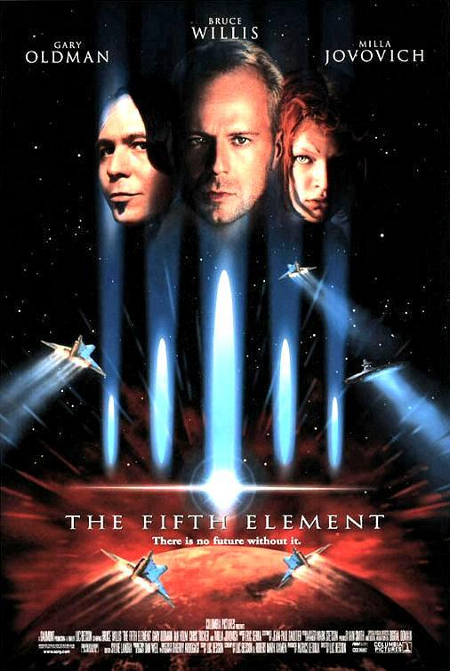

Cada 5.000 años se abre una puerta entre dos dimensiones. En una dimensión existe el Universo y la vida. En la otra dimensión existe un elemento que no está hecho ni de tierra, ni de fuego, ni de aire, ni de agua, sino que es una anti-energía, la anti-vida: es el quinto elemento
